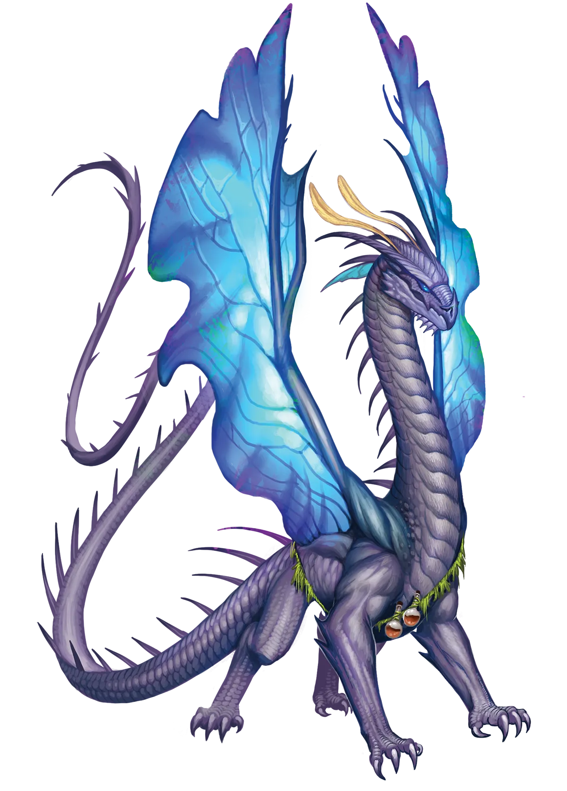
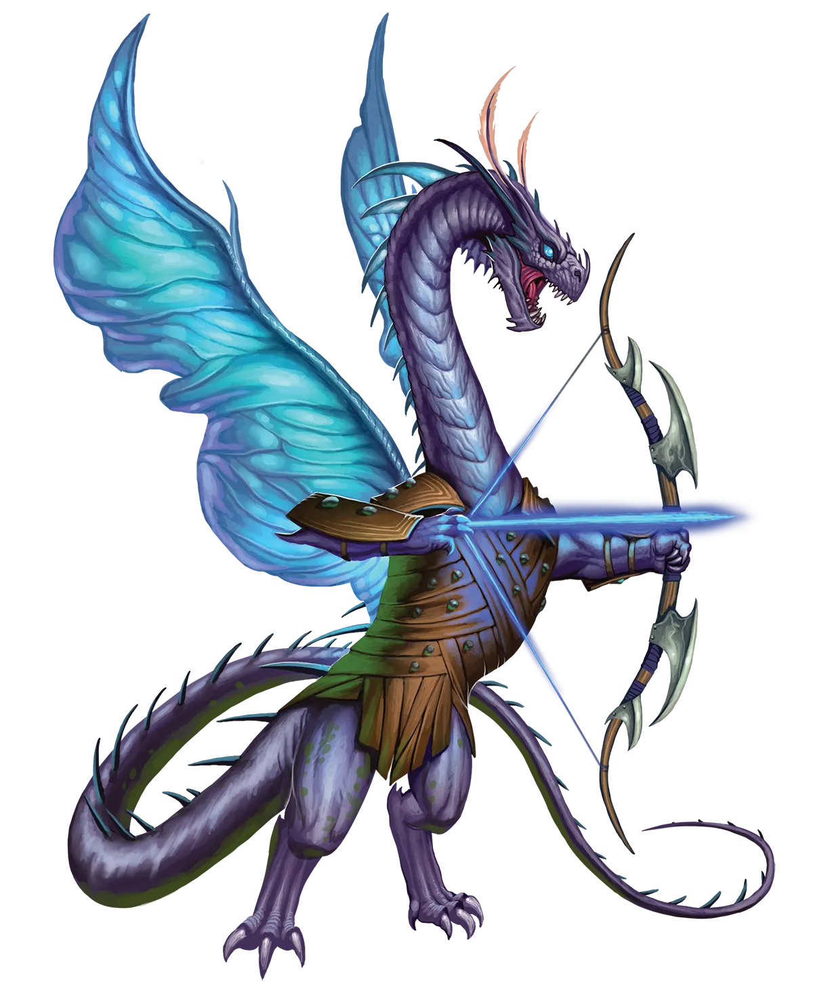

麻烦之源
浩劫龙类是行走的灾难，我个人绝不会与它们有任何近距离的交往。亲爱的读者，我也建议你如此。但你可能会好奇，鉴于它们惹祸的天赋，它们是如何不断找到同伴的？事实是，它们真诚的热情、即使在失败面前也保持的愉快乐观态度，以及对生活的热爱，使得她们的个性对他人颇具吸引力。她们常常能找到纵容者，这些人觉得她们实在太迷人了，以至于无法真正责怪她们的失误。
浩劫龙 Havoc Dragon |
|
|
浩劫龙类试图将周围的世界变成充满奇观和新体验的趣味奇幻景观。虽然理论上这很美妙，但实际上，浩劫龙类确实名副其实，因为它们最终会把事情弄得一团糟，自己也常常成为麻烦的源头。浩劫龙类异想天开的计划如此多变且不可预测，以至于很难准确预测它们何时、为何会使用“永恒之光”仪式。浩劫龙类选择尝试这一仪式的理由成千上万，既有与特定欲望或目标相关的复杂原因，也有诸如“当时看起来不错”或“只是因为仪式就在那里”这样更简单的理由。对于许多其他龙类来说，它们的同胞能够回顾它们的决定，即使强烈反对，至少也能理解引领它们的长生同胞举行仪式的推理脉络。但对于浩劫龙类，有时看看时机或选择，似乎只是一个令人费解的决定，时机也毫无道理。 它们举行仪式是为了阻止一场灾难，但还没来得及变得足够强大，灾难就降临了？确实，许多长生的浩劫龙类都落入了这个陷阱。或者也许仪式看起来很有趣，所以它们不假思索地跳了进去，但第二天却意识到自己需要某些被仪式夺走的能力来完成一项关键任务？许多长生的浩劫龙类也做过这样的事。传统派和长生浩劫龙类的同胞们都能理解；毕竟，无论是否涉及永恒之光仪式，哪条浩劫龙类没有在它们的生涯中造成过一些意外的连带损害或意想不到的后果呢？浩劫龙类甚至不太会去区分长生者和传统派，彼此之间一如既往地对待。正如浩劫龙类的常态，它们大部分时间都在默契而包容地无视彼此最大的失误，只会在事后很久，当伤口不再血淋淋时，才偶尔陷入轻松、善意的调侃。 长生的浩劫龙类是充满热情、精力充沛的实干家，渴望取悦他人。她们热情洋溢的态度、永不言弃的乐观精神以及强烈的忠诚与激情，很快就赢得了几乎所有类型冒险者的喜爱。然而，当浩劫龙类的失误最终为她们的冒险者同伴带来骚乱时，她们之间的羁绊才真正受到考验。有些队伍无法容忍龙类那善意的笨拙，于是放逐她们昔日的好友，让她另寻队伍。也正因为如此，长生的浩劫龙类总是保持乐观，可能要到第三个、第四个、第五个、第六个（甚至更多）冒险队伍，才能找到真正合适的伴侣，成为她们一生的挚友。一个能够学会接纳龙类及其全部错误的队伍，将得到一个忠诚、勤奋的终身挚友。浩劫龙类倾向于选择能为她们提供多种解决问题方式的职业，无论这些问题是否由她们自己造成，尽管正是这种倾向给了她们恰好能惹上麻烦的工具。这些职业尤其包括施法者，如术士，创意或即兴发挥的职业，如奇械师，或兼具法术与其他才能的职业，如吟游诗人。 麻烦之源 浩劫龙类是行走的灾难，我个人绝不会与它们有任何近距离的交往。亲爱的读者，我也建议你如此。但你可能会好奇，鉴于它们惹祸的天赋，它们是如何不断找到同伴的？事实是，它们真诚的热情、即使在失败面前也保持的愉快乐观态度，以及对生活的热爱，使得她们的个性对他人颇具吸引力。她们常常能找到纵容者，这些人觉得她们实在太迷人了，以至于无法真正责怪她们的失误。 浩劫龙特质 Havoc Dragon Traits 你出身于一脉满怀激情却总是不由自主闯祸的艺术家――浩劫龙世系。 |
  |